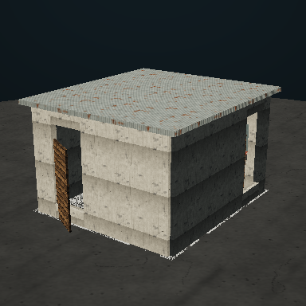
Kamar kos
building.house.kos4.5×3.12×5.247 m · 372 tris · 0.93 MB
room kos interior
review52 aset · meter · +Y atas · menghadap +Z · dibuat dari public/assets/registry.json

building.house.kos4.5×3.12×5.247 m · 372 tris · 0.93 MB
room kos interior
review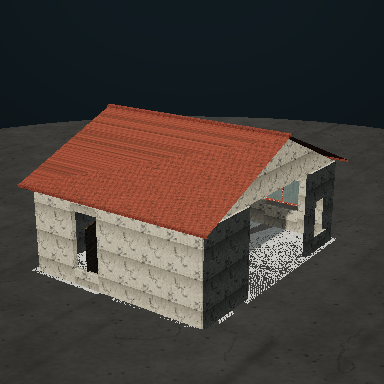
building.house.old7.8×5.465×9.35 m · 400 tris · 0.94 MB
house old decay interior
review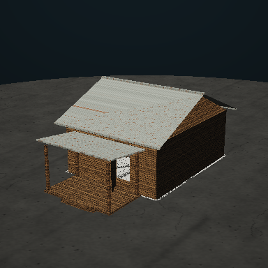
building.house.village7×5.165×11.625 m · 532 tris · 0.94 MB
house village wood interior
review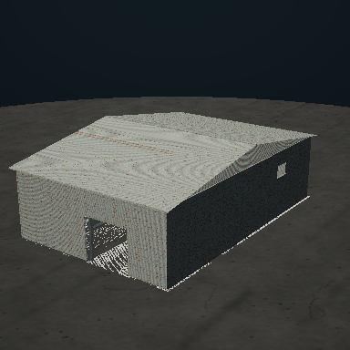
building.industrial.warehouse17×8.965×25.05 m · 976 tris · 0.43 MB
warehouse industrial interior
review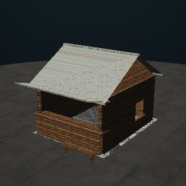
building.shop.warung4.7×4.605×6.75 m · 592 tris · 0.90 MB
shop warung interior night
review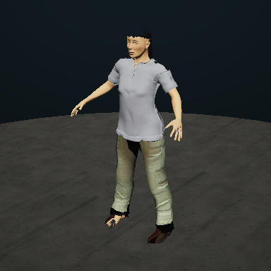
char.female-dewasa0.956×1.618×0.432 m · 38066 tris · 3.70 MB
human female adult mother · 163 tulang · 13 klip
review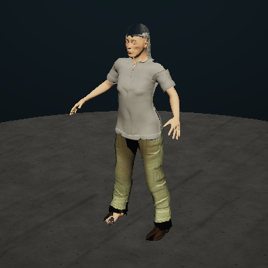
char.female-lansia0.921×1.557×0.416 m · 38066 tris · 3.85 MB
human female elder mother · 163 tulang · 13 klip
review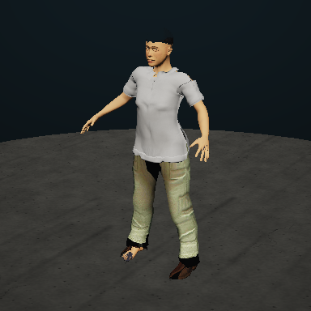
char.male-dewasa-polo1.025×1.733×0.464 m · 37848 tris · 3.55 MB
human male adult rider · 163 tulang · 13 klip
review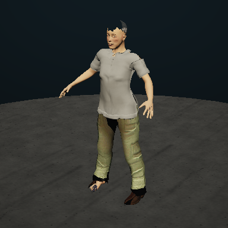
char.male-lansia-kemeja0.992×1.677×0.449 m · 37790 tris · 3.67 MB
human male elder father · 163 tulang · 13 klip
review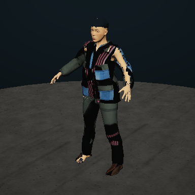
char.male-muda-jaket0.977×1.654×0.453 m · 39386 tris · 3.61 MB
human male teen worker · 163 tulang · 13 klip
review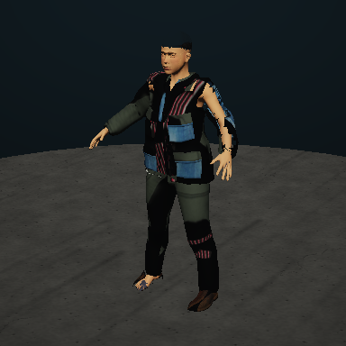
char.male-pekerja1.013×1.712×0.476 m · 39369 tris · 3.60 MB
human male adult worker · 163 tulang · 13 klip
review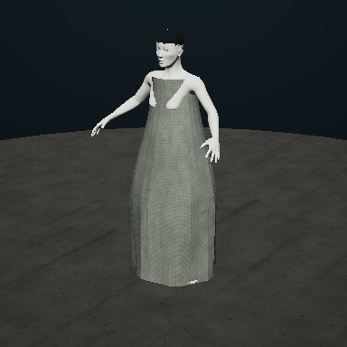
entity.child0.727×1.417×0.442 m · 30392 tris · 3.11 MB
ghost child humanoid · 166 tulang · 13 klip
draft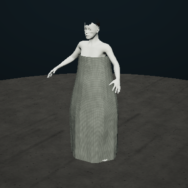
entity.pale-standing1.061×1.933×0.644 m · 30334 tris · 3.12 MB
ghost humanoid standing pale · 166 tulang · 13 klip
draft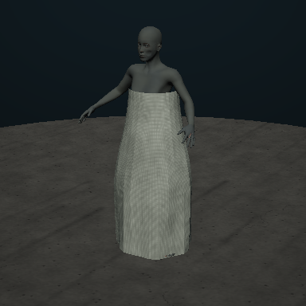
entity.shadow-crouch0.989×1.855×0.601 m · 29944 tris · 2.79 MB
ghost shadow crouch silhouette · 166 tulang · 13 klip
draft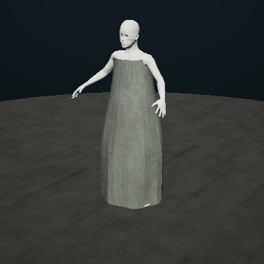
entity.tall-limbs1.358×2.798×0.825 m · 29944 tris · 2.82 MB
ghost humanoid tall long-limb · 166 tulang · 13 klip
draft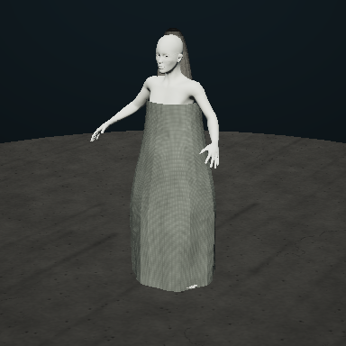
entity.veiled-seated0.965×1.869×0.586 m · 30560 tris · 2.97 MB
ghost humanoid seated veiled · 166 tulang · 13 klip
draft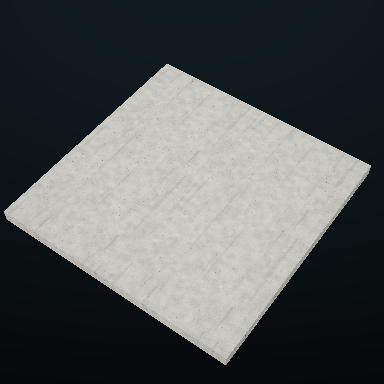
kit.floor.tile4×0.2×4 m · 12 tris · 0.14 MB
kit floor
review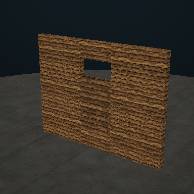
kit.wall.door4×3×0.18 m · 60 tris · 0.50 MB
kit wall door
review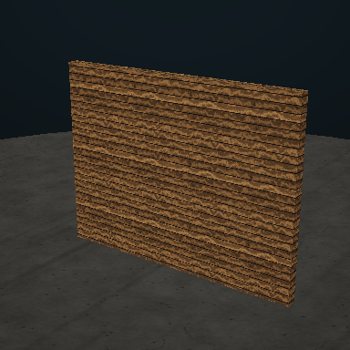
kit.wall.plain4×3×0.18 m · 12 tris · 0.36 MB
kit wall
review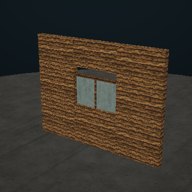
kit.wall.window4×3×0.18 m · 120 tris · 0.54 MB
kit wall window
review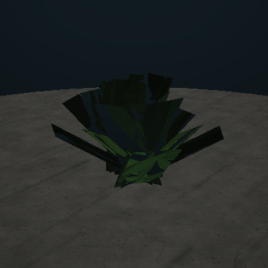
nature.bush.fern2.306×1.331×2.183 m · 36 tris · 0.29 MB
bush fern undergrowth
review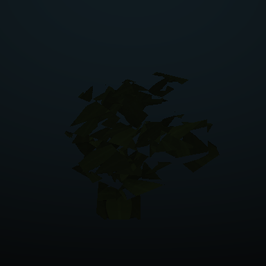
nature.grass.patch2.095×0.334×2.406 m · 52 tris · 0.28 MB
grass ground
review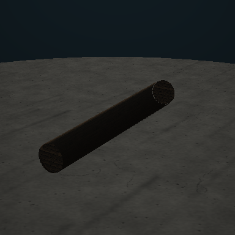
nature.log.fallen1.118×0.663×4.864 m · 140 tris · 0.21 MB
log forest prop
review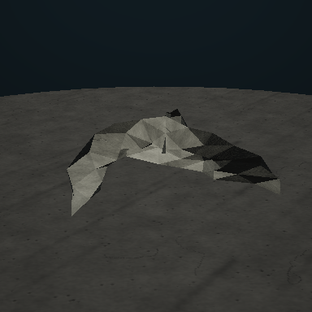
nature.rock.boulder2.513×1.015×2.078 m · 560 tris · 0.13 MB
rock stone
review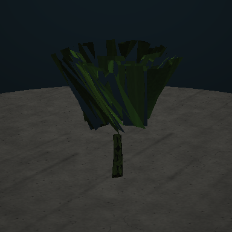
nature.tree.banana3.763×4.188×3.752 m · 142 tris · 0.41 MB
tree banana village
review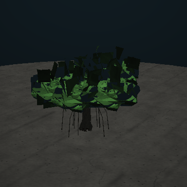
nature.tree.beringin14.854×10.698×14.878 m · 3144 tris · 0.50 MB
tree banyan large tropical
review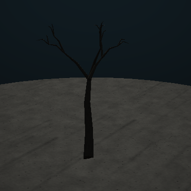
nature.tree.dead4.233×7.175×3.874 m · 792 tris · 0.12 MB
tree dead forest
review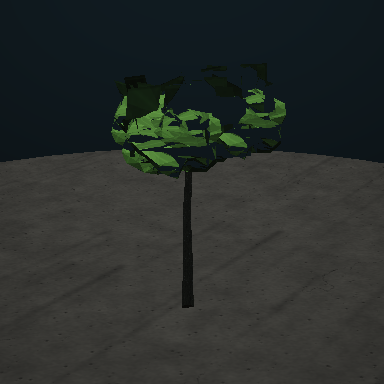
nature.tree.karet10.003×13.681×10.513 m · 2070 tris · 0.44 MB
tree rubber tall tropical
review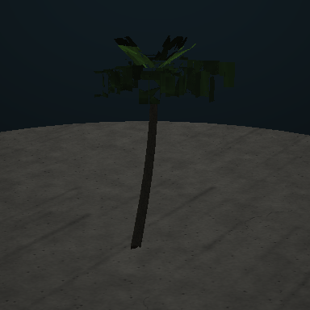
nature.tree.palm6.813×10.544×6.048 m · 394 tris · 0.37 MB
tree palm tropical
review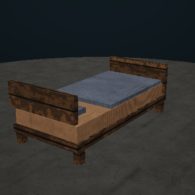
prop.bed0.95×0.77×2.06 m · 120 tris · 0.40 MB
furniture bed interior
review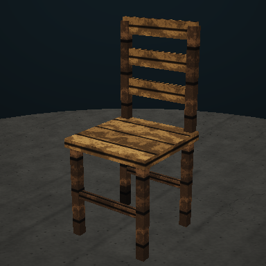
prop.chair.wood0.42×0.938×0.42 m · 144 tris · 0.26 MB
furniture chair interior
review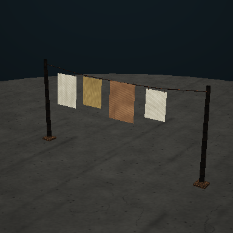
prop.clothesline4.24×1.95×0.24 m · 296 tris · 0.85 MB
home clothesline village
review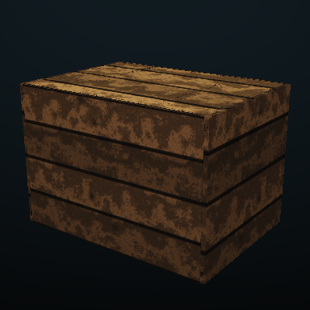
prop.crate0.73×0.5×0.525 m · 108 tris · 0.26 MB
container crate
review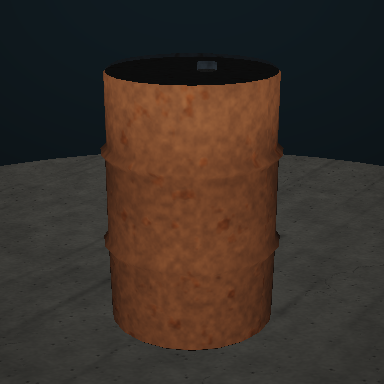
prop.drum0.62×0.925×0.62 m · 512 tris · 0.22 MB
container drum warehouse
review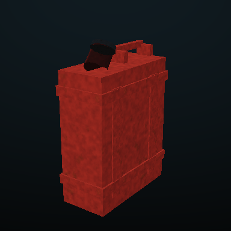
prop.jerrycan0.167×0.505×0.352 m · 200 tris · 0.15 MB
container can
review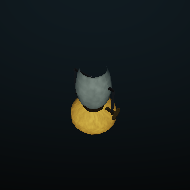
prop.lamp.teplok0.203×0.315×0.187 m · 712 tris · 0.15 MB
light lamp night
draft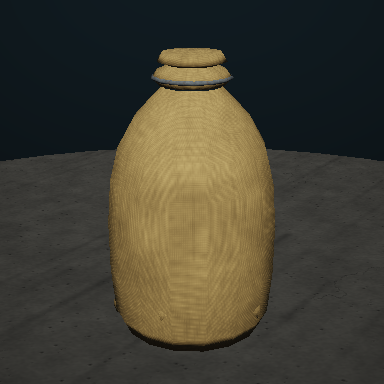
prop.sack0.5×0.833×0.5 m · 1020 tris · 0.22 MB
container sack warehouse
review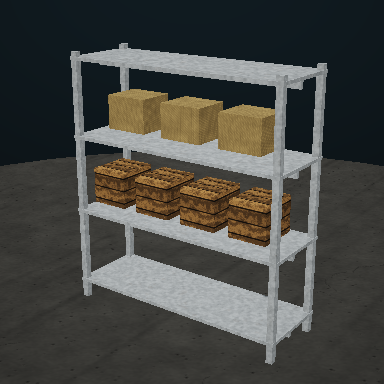
prop.shelves.steel1.8×2×0.6 m · 228 tris · 0.34 MB
furniture shelf warehouse
review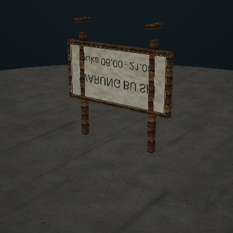
prop.signboard1.8×2.83×0.3 m · 100 tris · 0.16 MB
sign board
review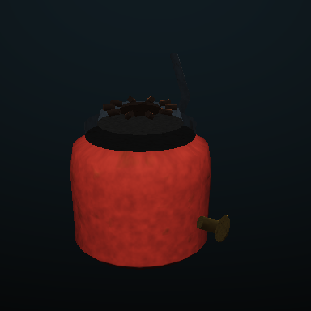
prop.stove0.413×0.464×0.387 m · 762 tris · 0.33 MB
kitchen stove interior
review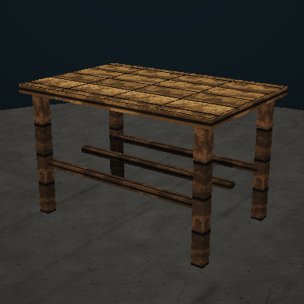
prop.table.wood1.2×0.761×0.8 m · 144 tris · 0.26 MB
furniture table interior
review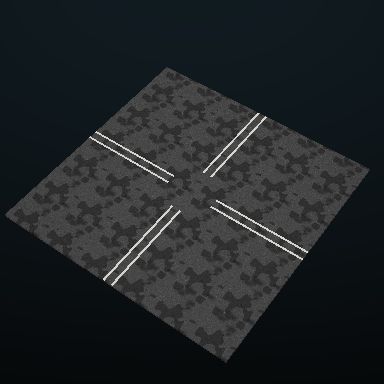
road.asphalt.cross12×0.126×12 m · 90 tris · 0.52 MB
road asphalt junction
review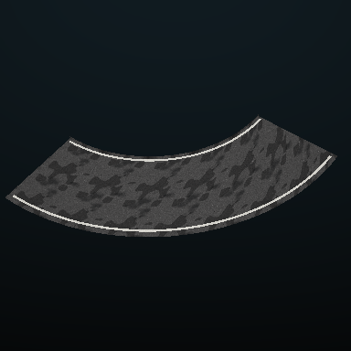
road.asphalt.curve10×0.124×10 m · 576 tris · 0.54 MB
road asphalt curve
review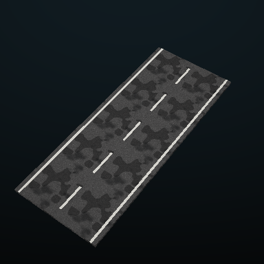
road.asphalt.straight4×0.126×10 m · 80 tris · 0.52 MB
road asphalt straight
review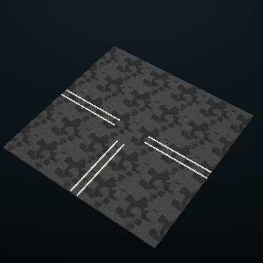
road.asphalt.tjunction10×0.126×10 m · 70 tris · 0.52 MB
road asphalt junction
review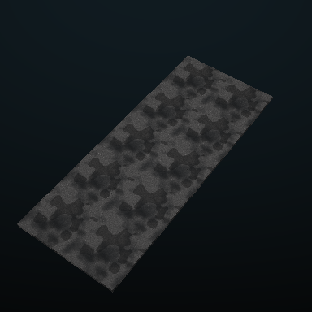
road.asphalt.wet4×0.12×10 m · 10 tris · 0.39 MB
road asphalt wet night
review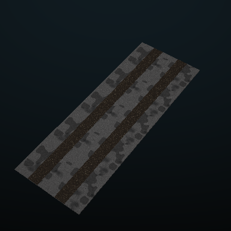
road.dirt.straight3.6×0.054×10 m · 30 tris · 0.63 MB
road dirt village
review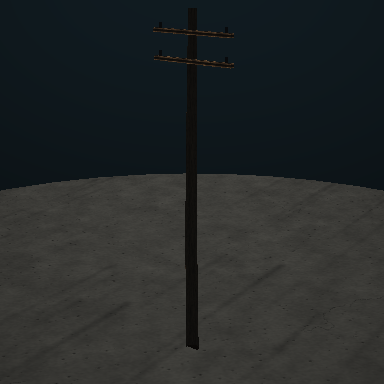
road.prop.powerpole2×8.004×0.35 m · 230 tris · 0.13 MB
road pole prop
review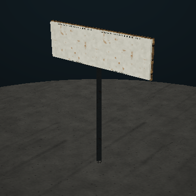
road.prop.signpost2.28×2.786×0.186 m · 72 tris · 0.13 MB
road sign prop
draft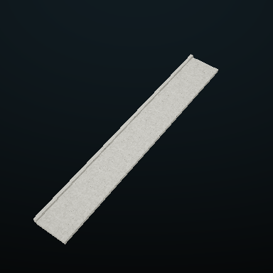
road.sidewalk.segment1.39×0.27×10 m · 124 tris · 0.15 MB
road sidewalk concrete
reviewvehicle.motorcycle.bebek0.682×1.235×1.88 m · 2250 tris · 0.39 MB
vehicle motorcycle ride
reviewvehicle.pickup1.811×1.332×4.715 m · 2544 tris · 0.29 MB
vehicle truck village
draft